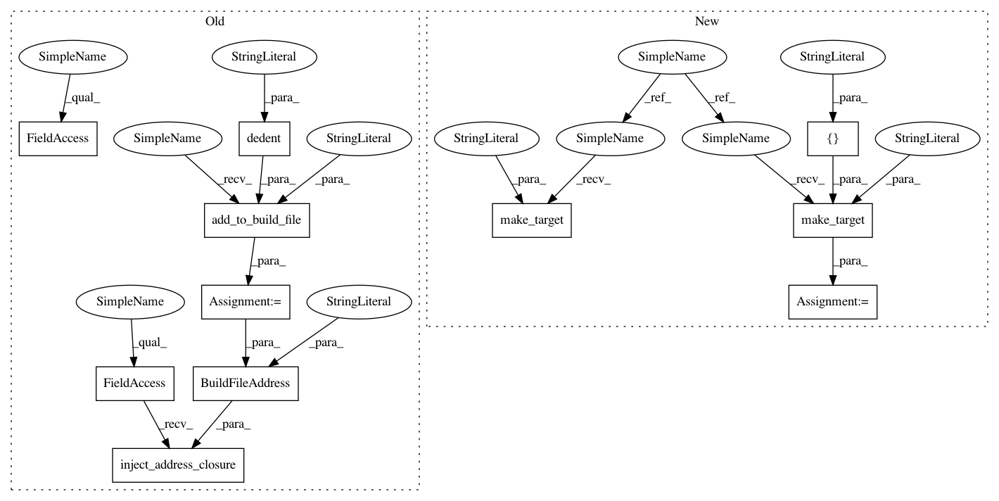

ad9f8480c8e08b95d6c217ec4a126bd93b7f376a,tests/python/pants_test/backend/jvm/targets/test_unpacked_jars.py,UnpackedJarsTest,test_simple,#UnpackedJarsTest#,32
Before Change
self.build_graph.inject_address_closure(BuildFileAddress(build_file, "foo"))
def test_simple(self):
build_file = self.add_to_build_file("BUILD", dedent("""
unpacked_jars(name="foo",
libraries=[":import_jars"],
)
jar_library(name="import_jars",
jars=[
jar(org="foo", name="bar", rev="123"),
],
)
"""))
address = BuildFileAddress(build_file, "foo")
self.build_graph.inject_address_closure(address)
target = self.build_graph.get_target(address)
self.assertIsInstance(target, UnpackedJars)
traversable_specs = [spec for spec in target.traversable_specs]
self.assertSequenceEqual([":import_jars"], traversable_specs)
After Change
with self.assertRaises(UnpackedJars.ExpectedLibrariesError):
self.make_target(":foo", UnpackedJars)
def test_simple(self):
self.make_target(":import_jars", JarLibrary, jars=[JarDependency("foo", "bar", "123")])
target = self.make_target(":foo", UnpackedJars, libraries=[":import_jars"])
self.assertIsInstance(target, UnpackedJars)
traversable_specs = [spec for spec in target.traversable_specs]
self.assertSequenceEqual([":import_jars"], traversable_specs)
In pattern: SUPERPATTERN
Frequency: 3
Non-data size: 11
Instances
Project Name: pantsbuild/pants
Commit Name: ad9f8480c8e08b95d6c217ec4a126bd93b7f376a
Time: 2015-08-31
Author: john.sirois@gmail.com
File Name: tests/python/pants_test/backend/jvm/targets/test_unpacked_jars.py
Class Name: UnpackedJarsTest
Method Name: test_simple
Project Name: pantsbuild/pants
Commit Name: ad9f8480c8e08b95d6c217ec4a126bd93b7f376a
Time: 2015-08-31
Author: john.sirois@gmail.com
File Name: tests/python/pants_test/backend/jvm/targets/test_jvm_target.py
Class Name: JvmTargetTest
Method Name: test_traversable_dependency_specs
Project Name: pantsbuild/pants
Commit Name: ad9f8480c8e08b95d6c217ec4a126bd93b7f376a
Time: 2015-08-31
Author: john.sirois@gmail.com
File Name: tests/python/pants_test/backend/jvm/targets/test_unpacked_jars.py
Class Name: UnpackedJarsTest
Method Name: test_bad_libraries_ref
Project Name: pantsbuild/pants
Commit Name: ad9f8480c8e08b95d6c217ec4a126bd93b7f376a
Time: 2015-08-31
Author: john.sirois@gmail.com
File Name: tests/python/pants_test/backend/jvm/targets/test_unpacked_jars.py
Class Name: UnpackedJarsTest
Method Name: test_simple